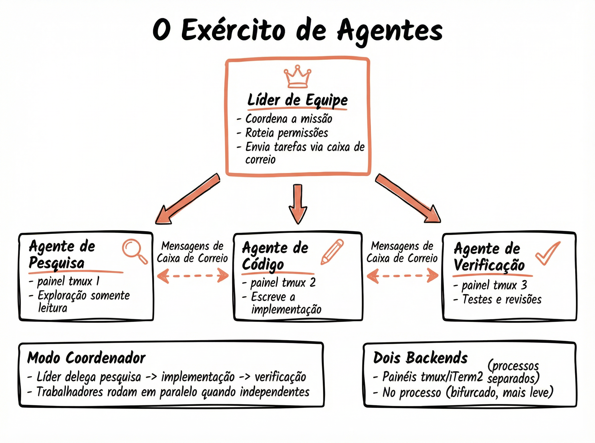
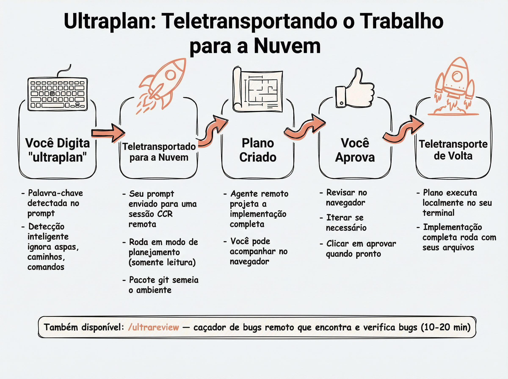

ê°Å¸ââ LêÂder de Equipe
O Modo Exê©rcito do Claude Code funciona com um coordenador central ê¢â¬â o LêÂder de Equipe. Ele orquestra trabalhadores especializados, roteia permissêµes entre eles e envia tarefas via sistema de mailbox. O lêÂder nunca executa trabalho diretamente: sua funê§ê£o ê© planejar, distribuir e supervisionar.

Como o LêÂder Coordena
Planejamento centralizado ê¢â¬â o lêÂder recebe a tarefa principal e a decompêµe em subtarefas atê´micas
Roteamento de permissêµes ê¢â¬â cada trabalhador recebe apenas as permissêµes necessê¡rias para sua subtarefa
Supervisê£o contêÂnua ê¢â¬â o lêÂder monitora o progresso e pode realocar tarefas se um trabalhador falhar
Distribuiê§ê£o via mailbox ê¢â¬â comunicaê§ê£o assêÂncrona estruturada entre lêÂder e trabalhadores
ê°Å¸â¡ Dica: Maximize a Eficiêªncia do LêÂder
O lêÂder ê© mais eficiente quando recebe tarefas bem definidas e decomponêÂveis. Evite tarefas vagas como "melhore o projeto" ê¢â¬â prefira "refatore os 5 mê³dulos de autenticaê§ê£o para usar o novo padrê£o de middleware". Quanto mais claro o objetivo, melhor a decomposiê§ê£o em subtarefas e mais eficiente a distribuiê§ê£o entre trabalhadores.
ê°Å¸â¬ Sistema de Mailbox
A comunicaê§ê£o entre lêÂder e trabalhadores acontece via mensagens estruturadas ê¢â¬â o sistema de mailbox. Cada trabalhador tem sua caixa de entrada e pode enviar mensagens de volta ao lêÂder. Quando um trabalhador precisa de uma permissê£o que nê£o possui, ele solicita ao lêÂder via mailbox, que decide se concede ou nê£o.
Anatomia de uma Mensagem
Tarefa (lêÂder ê¢â â trabalhador) ê¢â¬â contê©m descriê§ê£o, arquivos alvo, permissêµes concedidas e critê©rios de sucesso
Status (trabalhador ê¢â â lêÂder) ê¢â¬â reporta progresso, resultados parciais ou conclusê£o da subtarefa
Pedido de permissê£o (trabalhador ê¢â â lêÂder) ê¢â¬â quando o trabalhador precisa de acesso que nê£o foi concedido inicialmente
AssêÂncrono por design ê¢â¬â trabalhadores nê£o ficam bloqueados esperando resposta; continuam o que podem
ê°Å¸âÅ Fluxo de Comunicaê§ê£o
Latêªncia mê©dia: mensagens entre lêÂder e trabalhador sê£o processadas em milissegundos dentro do mesmo host
Formato estruturado: JSON com campos padronizados ê¢â¬â tipo, origem, destino, payload e timestamp
Fila persistente: mensagens nê£o se perdem se um trabalhador estiver ocupado ê¢â¬â ficam na fila atê© serem consumidas
Escalabilidade: o sistema suporta dezenas de trabalhadores simultê¢neos sem degradaê§ê£o
ê°Å¸âÂ¥ê¯Â¸Â Painê©is tmux/iTerm2
Cada trabalhador do exê©rcito roda em seu prê³prio painel isolado ê¢â¬â seja tmux ou iTerm2. Isso garante isolamento total de processos: um trabalhador travado nê£o afeta os outros. Cada painel tem seu prê³prio stdout, stderr e estado de execuê§ê£o.
tmux vs iTerm2
tmux (Linux/macOS) ê¢â¬â multiplexador de terminal. Cada trabalhador em um pane separado. Funciona em servidores remotos sem GUI.
iTerm2 (macOS apenas) ê¢â¬â terminal nativo com tabs. Integraê§ê£o mais visual, mas limitado ao macOS local.
Isolamento de processo ê¢â¬â cada painel ê© um processo independente com seu prê³prio PID e ê¡rvore de processos
Fallback automê¡tico ê¢â¬â se iTerm2 nê£o estiver disponêÂvel, o sistema automaticamente usa tmux
ê°Å¸â¡ Monitorando Trabalhadores
Use tmux com painê©is nomeados para acompanhar cada trabalhador em tempo real. O comando tmux list-panes mostra todos os painê©is ativos. Configure layouts automê¡ticos com tmux select-layout tiled para visualizar todos os trabalhadores simultaneamente. No iTerm2, use a funcionalidade de broadcast para enviar comandos a todos os painê©is de uma vez.
ê¢Å¡Â¡ Agentes In-Process
Nem todo trabalhador precisa de um processo separado. Agentes in-process usam fork dentro do mesmo processo Node/Bun, com AsyncLocalStorage para isolamento de contexto. Sê£o mais leves, iniciam instantaneamente e compartilham cache ê¢â¬â ideais para tarefas curtas e paralelas.
Fork In-Process com AsyncLocalStorage
Mesmo processo, contextos isolados ê¢â¬â AsyncLocalStorage cria escopos independentes dentro do mesmo event loop
Inicializaê§ê£o instantê¢nea ê¢â¬â sem overhead de criaê§ê£o de processo ou alocaê§ê£o de painel tmux
Cache compartilhado ê¢â¬â agentes in-process aproveitam o cache de prompt do processo pai automaticamente
Propagaê§ê£o automê¡tica ê¢â¬â o contexto segue atravê©s de callbacks, Promises e chains assêÂncronas sem vazamento
ê°Å¸âÅ Performance Comparada
Tempo de criaê§ê£o: in-process ~1ms vs tmux/iTerm2 ~200-500ms ê¢â¬â diferenê§a de 200x
Uso de memê³ria: in-process compartilha heap do processo pai vs processo separado aloca ~50-100MB novo
Cache de prompt: in-process herda 100% do cache vs processo separado comeê§a do zero
Trade-off: menos isolamento (crash afeta o processo pai) mas muito mais eficiente para tarefas curtas
ê¢ËÂê¯Â¸Â UltraPlan
O UltraPlan ê© o teletransporte do Claude Code para a nuvem. Vocêª envia um prompt, um agente remoto projeta o plano completo, vocêª aprova pelo browser, e a execuê§ê£o volta para o ambiente local. êâ° a ponte entre planejamento escalê¡vel na nuvem e execuê§ê£o segura na sua mê¡quina.

Fluxo Completo do UltraPlan
1. Envio do prompt ê¢â¬â vocêª descreve a tarefa localmente; o Claude Code empacota contexto e envia para a nuvem
2. Planejamento remoto ê¢â¬â um agente na nuvem analisa o contexto e projeta um plano detalhado com subtarefas
3. Aprovaê§ê£o no browser ê¢â¬â o plano ê© apresentado em uma interface web para revisê£o e aprovaê§ê£o humana
4. Execuê§ê£o local ê¢â¬â apê³s aprovaê§ê£o, o plano volta para a mê¡quina local e ê© executado pelo exê©rcito de agentes
ê°Å¸â¡ Quando Usar UltraPlan
UltraPlan brilha em tarefas complexas que exigem planejamento profundo ê¢â¬â refatoraê§êµes grandes, migraê§êµes de framework, ou reestruturaê§êµes de arquitetura. O planejamento na nuvem tem acesso a mais compute e tempo de raciocêÂnio do que o ambiente local, resultando em planos mais detalhados e menos erros de execuê§ê£o. Use-o quando a tarefa ê© grande demais para planejar em uma êºnica sessê£o local.
ê°Å¸â¦ Git Bundles
Para que o agente remoto do UltraPlan tenha contexto do seu projeto, o Claude Code usa Git Bundles para semear o ambiente na nuvem. O processo tem mêºltiplos fallbacks para garantir que o cê³digo chegue lê¡, independentemente do tamanho do repositê³rio ou estado do working directory.
Estratê©gia de Fallback dos Bundles
Tentativa 1 ê¢â¬â Histê³rico completo ê¢â¬â envia o repositê³rio inteiro como bundle, incluindo todo o histê³rico de commits
Tentativa 2 ê¢â¬â Apenas HEAD ê¢â¬â se o histê³rico for grande demais, envia apenas o commit atual (shallow clone)
Tentativa 3 ê¢â¬â Squash ê¢â¬â comprime todos os commits em um êºnico commit e envia como bundle mêÂnimo
Captura de stash ê¢â¬â alteraê§êµes nê£o commitadas sê£o preservadas via stash e incluêÂdas no bundle
Fazer
- ✓ Commitar alteraê§êµes importantes antes de usar UltraPlan
- ✓ Manter o repositê³rio limpo para bundles menores e mais rê¡pidos
- ✓ Usar .gitignore para excluir arquivos pesados do bundle
- ✓ Revisar o plano no browser antes de aprovar a execuê§ê£o
Evitar
- ✗ Enviar repositê³rios com binê¡rios grandes sem .gitignore
- ✗ Aprovar planos sem revisê£o ê¢â¬â sempre verifique as subtarefas
- ✗ Incluir credenciais ou secrets no bundle (use .gitignore)
- ✗ Usar UltraPlan para tarefas simples que um agente local resolve
ê°Å¸ââ¹ Resumo do Mê³dulo
Prê³ximo Mê³dulo:
3.2 - ê°Å¸Åâ° A Ponte